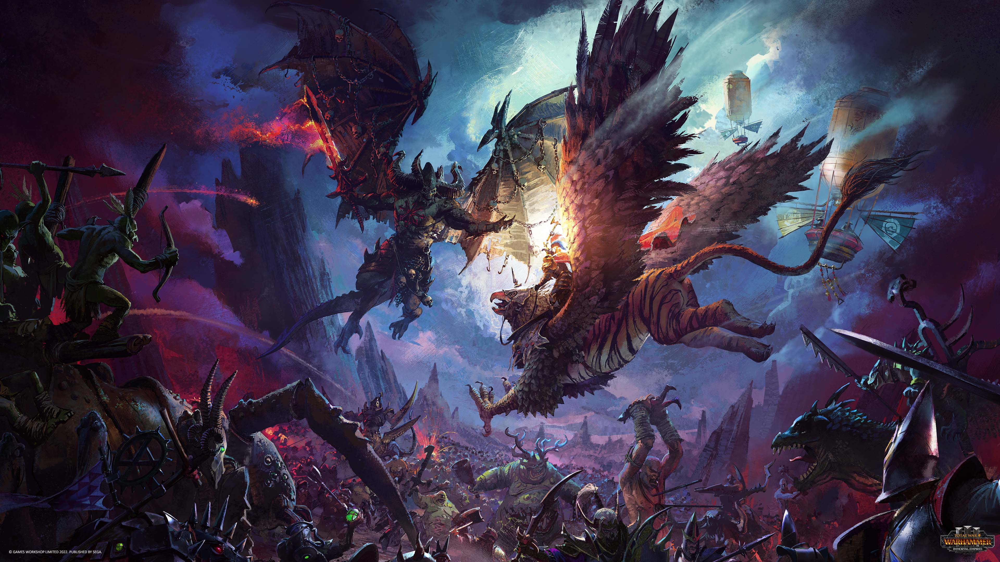

Jogo Favorito
Total War: Warhammer
Jogo de estratégia que combina gerenciamento de impérios por turnos com batalhas táticas em tempo real no universo de Warhammer Fantasy. Permite comandar facções como o Império, Anões, Pele-verdes e Condes Vampiros, gerenciando cidades, diplomacia e exércitos completos.